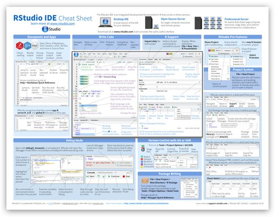
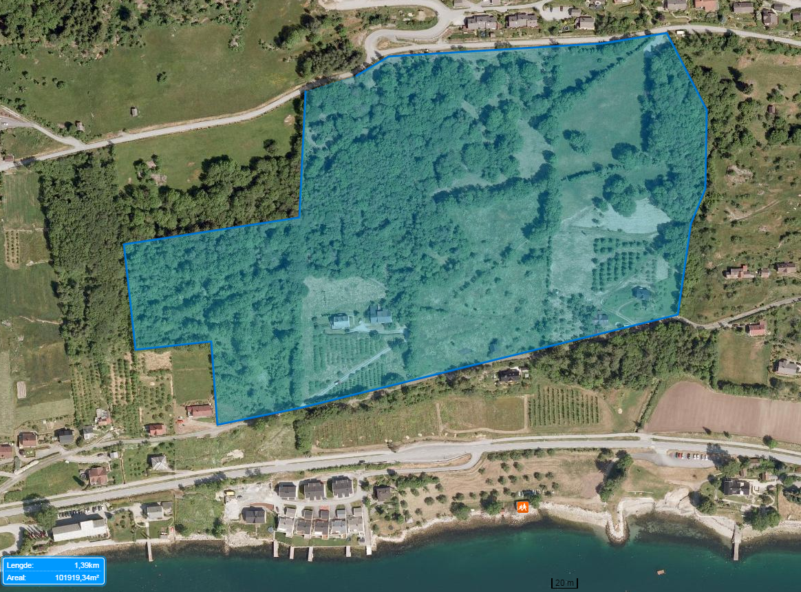
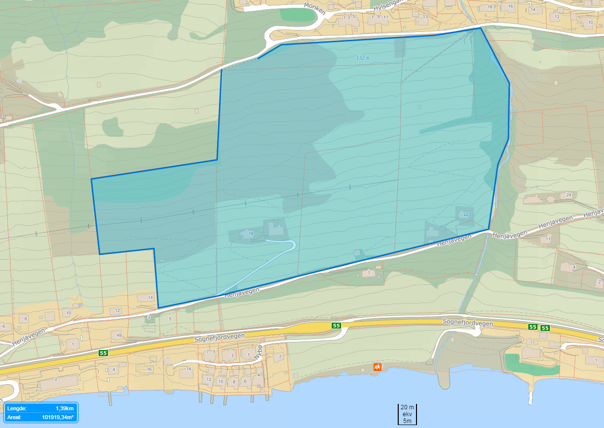
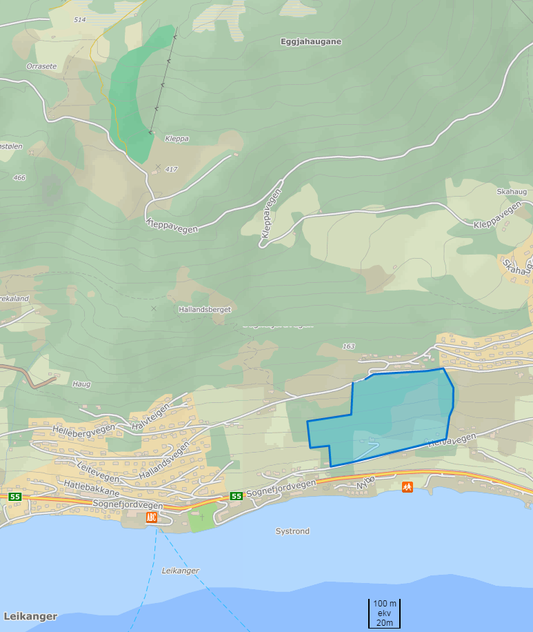
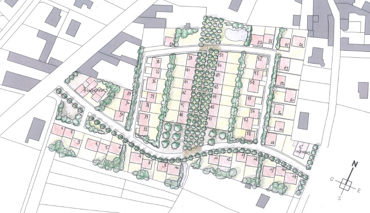
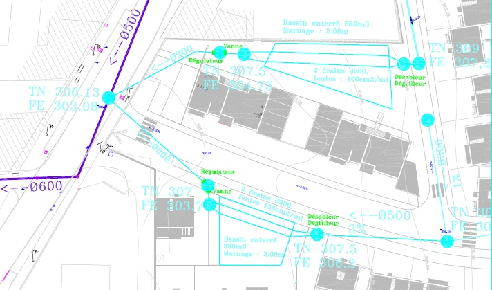

Glacier lake outburst floods: case study on Harbardsbreen, Breheimen
Two lakes form every year within central parts of Harbardsbreen. The larger one has produced several jøkulhlaups during the past 20 years (NVE report: inventory of glacier-related hazardous events in Norway).
The thickness of the ice dam was measured by ground-penetrating radar in the 1990s. Surface-elevation of the glacier has decreased during the past 50 years.
Glacier lake outburst floods: case study on Harbardsbreen, Breheimen
You will determine the critical water level in the lake at which the lake drains (lifting the glacier ice). Considering the areal extent and bottom topography of the lake, you will estimate the lake volume associated with critical water level.
You will outline the catchment from which the lake draws water from and estimate the time for the lake to fill, given snow water equivalent at the beginning of the summer melt period, rain and snow melt using meteorological data (senorge). Does the water input to the lake vary from year to year? Can the occurance of past jøkulhlaups be explained by certain meteorological and hydrological conditions?
Hydrological modelling in the Sogndal valley
- Data exploration and hydrological modelling of the Sogndal catchment using R and/or HBV-light.
- This can also have an experimental aspect. Available equipment: portable EC/pH meter, soil moisture sensors, soil temperature sensors, water pressure sensors, fluorometer)
Comparing discharge measurement techniques
- You can use several methods and compare the results: salt dilution, dye tracer dilution, discharge apps (discharge.ch and crowdwater.ch), portable flow meter.
- This project would work well in copperation with the next project (flood routing).
Flood routing for Sogndalselvi
- Experiment with this new discharge app or use results from the discharge gauging group.
- There is an automatic discharge station at the downstream end of Dalavatnet. Complement those data with measurements further down (or up) the valley to come up with a flood routing model for the Sogndal catchment.
- An interesting question can be understanding the effect of Sogndalsvatnet on flood damping.
- This project can be linked to the hydrological modelling of the Sogndal catchment.
Erosion experiment with soil moisture sensors
Synthesis projects
- Recommendation for green infrastructure design in Norway: which techniques are promising, where, under which circumstances…
- Prepare a set of reference drawings / specifications on stormwater management for Western Norway?
- Develop a cheatsheet on green SW infrastructure (i.e nervous system, R programming)

–>
Design SW infrastructure in 3 steps
Try different methodologies to come up with recommendations regarding the points Asplan Viak made at an NVE conference
Three steps for urban stormwater management were linked to different return periods:
Step 1 using the mean annual flood: local infiltration / retention Step 2 using a 20-year: flood: neighborhood-scale measures Step 3 using a 200-year flood: safe overflows.
How to design stormwater infrastructure according to those guidelines? Asplan Viak was putting forward volumes in percent of how each step is contributing to specific events. I suspect they are partly guessed. Could there be a reliable methodology?
Optimizing hydropower for flood protection
Can hydro-meteorological modelling and historical statistical analysis help to optimize the management of Leirdalvatnet in autumn.
The short residence time in the reservoir makes the task of optimizing flood protection versus maximizing earning potential difficult.
You could look at international examples of coupled hydropower and flood mitigation (i.e. Switzerland); and discuss ecological impacts vs human benefits.
Sites vulnerable to future changes in runoff
Example: field hydrology and hydraulics in Olnes
The catchment above my place (Fjordhytter, Ølnes) is hard to define. The flowpaths are also not straightforward.
Overflowing could erode the apple orchards. What are the current and future risks?
This project could involve field experiments such as flow measurements and dye tracing. It could also involve scenarios of further residential development.
Further ideas you could explore
- Smart water harvesting: empty tanks before significant rain. This is well suited to arid areas with flashy rain events.
- Crowd sourcing hydrological / infrastructural information (see crowdwater.ch)
Further development of last year’s projects
Design projects: Leikanger 100 dwellings, 10ha

Design projects: site map

Design projects: catchment

Design projects: options
Different design challenges:
- minimum extra outflow (least hydrological impact)
- off the grid design
- most agriculture / food production friendly design
- design (incl. climate change) for its actual climate or
- semi-arid climate (US mid-west, middle east)
- mediteranean climate (Marseille, California)
- (sub)tropical climate (NSW, central America)
Design projects: example drawings

Design projects: example drawings

Design projects: other ideas
- You can suggest another area to be developed
- Re-design the campus for water harvesting and irrigation of urban agriculture. This could be linked to smart reservoirs.
- Look for problems involving SW in the region and propose solutions (dirt roads, specific locations in Sogndal)
Design projects: expectations
- Drawings (hand, sketchup…) are encouraged.
- Try to specify construction requirements: inputs / outputs in materials, timing
- Explain the process: your assumptions, calculations, context, design choices…
- Be creative: do not give only 1 option
- No need for huge report
Lab permeameter / Field infiltration experiments
- Further experiment with the lab permeameter
- Compare with simple field infiltration experiments
- Soil moisture sensors can be used in field experiments
- Determine soil properties
Project groups + second project
Project development
- Groups and subjects (including second project) to be decided before Mai 9.
- Last quiz dedicated to projects. 4 Q/A on your project, 2 Q/A on the second project.
- During the 10 day period before the exam, you can come consult us.
Project reporting and presentation
- The reports are sent to fkba@hvl.no and uploaded to fronter: Friday 9th of June. 24:00
- Slide show of 5 minutes per person (so 15 or 20 min total depending on the group)
- You can record your presentation in advance as an edited video (room for creative work)
- The group with the same “second project” as the presenters gets priority for questions. They should have read the “second project” report in detail.
- The individual exam will then discuss the personal project, the second project and the course material
Overall assessment criteria
- How much work was put into it. Reasonably easy to see!
- Creativity: I do not want only a synthesis of existing documents.
- Rigor: discuss well the limitations of your approach
- Overall report quality and structure: what is the problem, why? How did we tackle it? What are our results and why are they good / bad?
- For experimental / modelling projects: good explanation of the analysis (available data, methods, assumptions, results)
- Shy / less eloquent presenters will not be penalized. The whole group gets one common grade.